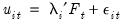
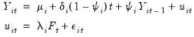
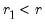
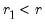
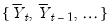
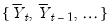

|
|
|
In “Cross-sectionally Independent Panel Unit Root Testing”, we described first generation panel unit root tests on pooled panel data, with (possibly) individual trend, intercepts, and lag coefficients when there is cross-sectional independence.Second generation panel unit root tests may be performed on a single series in a panel workfile or on a group of series in a workfile. To perform the test in the panel setting, you should open the series and then click on View/Unit Root Tests/Cross-Sectionally Dependent... In the group setting, open the group and click on the same view entry. EViews will display the dialog:The Test section of the dialog is used to specify the basic test type:The Type dropdown lets you choose between the two second generation panel unit root test types: Bai and Ng - PANIC and Pesaran - CIPS.The Deterministics dropdown offers three choices for the deterministic terms to be included in the specification: None, Constant, or Constant and trend.The ADF lag selection section controls the specification of the ADF test specifications in the PANIC and CIPS tests.The Method dropdown offers several options for determining the number of lagged difference termsto use in the ADF specifications. You may use the dropdown to select between using information criteria (Akaike, Schwarz, Hannan-Quinn, Modified Akaike, Modified, Schwarz, Modified Hannan-Quinn), performing t-tests of lag difference variable significance, or providing a user-specified fixed value.
For the information criteria and t-test options, you will be prompted for the maximum number of lags to consider; for the user-specified fixed value, you will be prompted to enter the value itself.Note that EViews pre-fills the Maximum lags edit field with a default value derived from a variation of the Schwert (1989) rule: let there be a lag choice functionfor
and let
; then the default maximum lag
.
If you choose to perform a PANIC test the PANIC MQ options section offers options for controlling the computation:The Significance level edit field lets you choose the level of significance at which EViews will perform the test as the p-value for these statistics is obtained by simulation.
, the Lag selection options will be enabled so that you may control the order of the VAR(
). The settings are as described in “ADF Lag Selection”.
The Factor selection options control the selection of number of factors method used in the PANIC procedure:The Method dropdown lets you choose between the Simple, Bai and Ng, and Ahn and Horenstein. In turn, each of these choices offers different options.
.
is the default test, at this point, one can simply click on OK to compute this test.
Next, the common factors table displays the PANIC test for how many common factors influence the panel. The test statistic and associated p-value are reported. In this particular case, that number selected 7, which is also the maximum number of factors allowed using the Schwert (1989) rule.The table that follows displays the individual ADF test statistics for the idiosyncratic elements associated with each cross-section. The ADF lags are selected for each cross-section independently using the same automatic selection rule, which in this case happens to be AIC with 7 maximum lags. Furthermore, the columns t-stat and p-value report the ADF t-statistic and associated p-value corresponding to the null hypothesis that the idiosyncratic element exhibit a unit root. It is readily seen that apart from Norway, all other cross-sections exhibit a unit root at the 5% significance level.From the series window click on View/Unit Root Tests/Cross-Sectionally Dependent.... In the PANIC MQ options section select MQF in the Type dropdown. Next, under the Factor selection group, select Ahn and Horenstein from the Method dropdown. Furthermore, for the Max. factors, select Ahn and Horenstein. Lastly, ensure that Time-demean, Time-standardize, Cross-demean, and Cross-standardize are all checked. Click on OK.The spool output display is analogous to that in “PANIC MQc Example”. Here, the factor selection procedure is based on Ahn and Horenstein (2013).Lastly, the pooled version of the latter tests has a p-value which effectively zero, and therefore we fail to reject the null hypothesis that all cross-sections are not cointegrated.The final example uses the same data. Here, the objective is to perform the Pesaran (2007) CIPS test. From the series window click on View/Unit Root Tests/Cross-Sectionally Dependent.... From the Type dropdown, select Pesaran – CIPS. To conform with the analysis in the original paper, change the Method dropdown in the ADF lag selection group to User. We will stick with a single lag for the ADF regression. Hit OK.The first of the spool tables is a summary of the CIPS procedure performed. The second is a table listing the details of the CIPS test. In particular, the first part of this table displays the critical values for the usual CIPS statistic as well as its truncated version. The second portion of this table summarizes the test results. Note that the t-statistic is displayed along with the associated p-values which are summarized categorically based on the critical values tabulated in Pesaran (2007). Here, we cannot reject the null hypothesis below the 10% significance level. Furthermore, the outcome of this table matches the results reported in Table XI of the original paper.Here, the first portion of the table summarizes the critical values associated with the CADF statistic as well as its truncated version. The second portion of this table summarizes the test results for each of the cross-sections. In particular, these are t-statistics associated with the cross-sectionally augmented ADF regressions for each of the cross-sections. The table summarizes the t-statistic and p-value category for each of the CADF and truncated CADF test statistics. In particular, here we cannot reject the unit root null hypotheses at significance levels less than 10% for any of the cross-sections.In particular, if the T or N columns display values, it implies that interpolation was done on that dimension of the data.

denotes a vector of cross-section specific factor loadings, and
is a multivariate idiosyncratic component which is cross-sectionally independent as
is assumed to account for all inter-cross-sectional correlations. When are not cross-sectionally independent, the factor model governing
is said to be approximate. As usual,
is the lag operator, and we have the polynomial:
and idiosyncratic components can each be
or
. This generality permits a wide spectrum of possible outcomes for the properties of the observed
. For instance,
is considered
if either
or
is
. Alternately, if the number of common trends ,
is deemed conditionally stationary or non-stationary, depending on the properties of the idiosyncratic component .


 and let
and let  ; then returns the value
; then returns the value  .
.

 test statistic and the Ahn and Horenstein (2013) factor selection procedure.
test statistic and the Ahn and Horenstein (2013) factor selection procedure.  , respectively, denote the cross-section and time indices, and consider the following integrated panel data model:
, respectively, denote the cross-section and time indices, and consider the following integrated panel data model: are the model deterministic dynamics, and
are the model deterministic dynamics, and  are the innovations.
are the innovations. as having a factor model structure,
as having a factor model structure, is a vector of
is a vector of  common factors generated by a multivariate white noise process ,
common factors generated by a multivariate white noise process , govern the nature of the process for
govern the nature of the process for  . For example, when
. For example, when  has rank 0,
has rank 0,  is non-stochastic and stationary, or
is non-stochastic and stationary, or  . Alternately, when has rank ,
. Alternately, when has rank ,  is an
is an  process driven by
process driven by  linearly independent stochastic trends. In particular, when ,
linearly independent stochastic trends. In particular, when ,  has common trends and
has common trends and  cointegrated stationary factors.
cointegrated stationary factors. is a mean zero, stationary, and invertible MA process. PANIC assumes a balanced sample where both
is a mean zero, stationary, and invertible MA process. PANIC assumes a balanced sample where both  and
and  are large, such that as both .
are large, such that as both . .
.
 contains a linear trend,
contains a linear trend,  is both demeaned and differenced,
is both demeaned and differenced, and idiosyncratic components
and idiosyncratic components  :
: of common factors, or use
of common factors, or use  and to determine
and to determine  , the number of factors to use (
, the number of factors to use ( matrix, producing the matrix of eigenvectors
matrix, producing the matrix of eigenvectors  .
. , form a matrix of
, form a matrix of  differenced common factors and run a regression of
differenced common factors and run a regression of  on to obtain the factor loadings matrix .
on to obtain the factor loadings matrix .  and idiosyncratic components by taking cumulative sums of terms involving
and idiosyncratic components by taking cumulative sums of terms involving  and
and  .
. lags on the
lags on the  for each cross-section and test for a unit root in the idiosyncratic component.
for each cross-section and test for a unit root in the idiosyncratic component. . Similarly, we may compute a pooled test statistic based on Maddala and Wu (1999) and Choi (2001),
. Similarly, we may compute a pooled test statistic based on Maddala and Wu (1999) and Choi (2001),  exists. As such, the pooled test is also, in fact, a panel test for no cointegration.
exists. As such, the pooled test is also, in fact, a panel test for no cointegration. lags and tests for a unit root in the common factor.
lags and tests for a unit root in the common factor. , is based on a VAR(1) representation and corrects for serial correlation of arbitrary form through a non-parametric estimation.
, is based on a VAR(1) representation and corrects for serial correlation of arbitrary form through a non-parametric estimation.  ) representation, and corrects for the presence of serial correlation through a filter procedure.
) representation, and corrects for the presence of serial correlation through a filter procedure.  statistics is warranted here. In particular, these statistics are modified versions of similarly named statistics in Stock and Watson (1988) that were designed to test the null hypothesis that
statistics is warranted here. In particular, these statistics are modified versions of similarly named statistics in Stock and Watson (1988) that were designed to test the null hypothesis that  common factors have at most
common factors have at most  common stochastic trends, against the alternative that they have less than
common stochastic trends, against the alternative that they have less than  common trends. In this regard, the
common trends. In this regard, the  test adapts the Dickey and Fuller (1979) unit root test to the multivariate settings. On the other hand, the
test adapts the Dickey and Fuller (1979) unit root test to the multivariate settings. On the other hand, the  parallels in the multivariate the Phillips (1987) test.
parallels in the multivariate the Phillips (1987) test. statistic, the testing procedure first computes the relevant for and tests whether the number of common stochastic trends is equal to
statistic, the testing procedure first computes the relevant for and tests whether the number of common stochastic trends is equal to  . If the null is not rejected, we conclude that all
. If the null is not rejected, we conclude that all  common factors are nonstationary. If the null is rejected, we decrement
common factors are nonstationary. If the null is rejected, we decrement  by
by  and repeat until we fail to reject or until
and repeat until we fail to reject or until  .
. common factors,
common factors,  are nonstationary, and are stationary.
are nonstationary, and are stationary. common factors are stationary.
common factors are stationary. and
and  is
is  ).
).  are mean zero, stationary ARMA processes that are cross-sectionally and intra-sectionally independent. In addition to being
are mean zero, stationary ARMA processes that are cross-sectionally and intra-sectionally independent. In addition to being  ,
,  is assumed to be serially uncorrelated with mean zero and constant variance, and
is assumed to be serially uncorrelated with mean zero and constant variance, and  , , and
, , and  are mutually independent for all
are mutually independent for all  lagged differences are added to account for correlation in the
lagged differences are added to account for correlation in the  , and represents factor augmentation.
, and represents factor augmentation. and for
and for  sufficiently large, Pesaran (2007) argues that  where
sufficiently large, Pesaran (2007) argues that  where  . It follows that and may be used to filter out the effects of the unobserved common factor.
. It follows that and may be used to filter out the effects of the unobserved common factor.  is sufficiently small, say . Define the constants and obtained by simulation in Pesaran (2007), and use these values to define a truncated version of ,
is sufficiently small, say . Define the constants and obtained by simulation in Pesaran (2007), and use these values to define a truncated version of ,